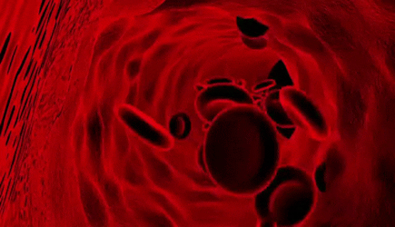

Retour page d'accueil
Les micros-robots pourraient être injectables ce qui peux éviter des opérations
Date : 15 septembre, 2020
La médecine en bénéficierait particulièrement,
notamment en chirurgie et dans l’exploration interne de notre corps.
La taille idéale pour circuler sans encombre dans les vaisseaux sanguins et atteindre n’importe
quel organe intérieur.

Les possibles applications:
Ces micro-robots sont faits avec des matériaux non toxiques pour notre organisme.
On peut ainsi les introduire à partir d’une seringue remplie de solution injectable.
Les opérations chirurgicales nécessitent toujours des incisions lourdes de conséquences pour atteindre un organe malade.
En outre, les plaies peuvent s’infecter facilement quand les conditions sont favorables au développement des bactéries
au mieux, il y a toujours une cicatrice qui reste visible en guise de souvenir de l’opération effectuée.
ils peuvent s’adapter facilement à l’environnement qui règne à l’intérieur de notre organisme.
Ils ne craignent pas l’acidité qui règne dans le système digestif et la température corporelle de l’homme est inoffensive pour eux.
Ils peuvent aussi être utilisés pour recueillir des informations cruciales sur notre état de santé.
La difficulté à laquelle les chercheurs se heurtent actuellement à de rendre les machines microscopiques capables d’effectuer des tâches précises et de s'ordonner pour effectuer des actions de groupes.
Source